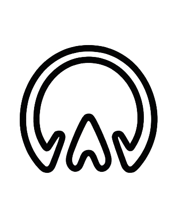
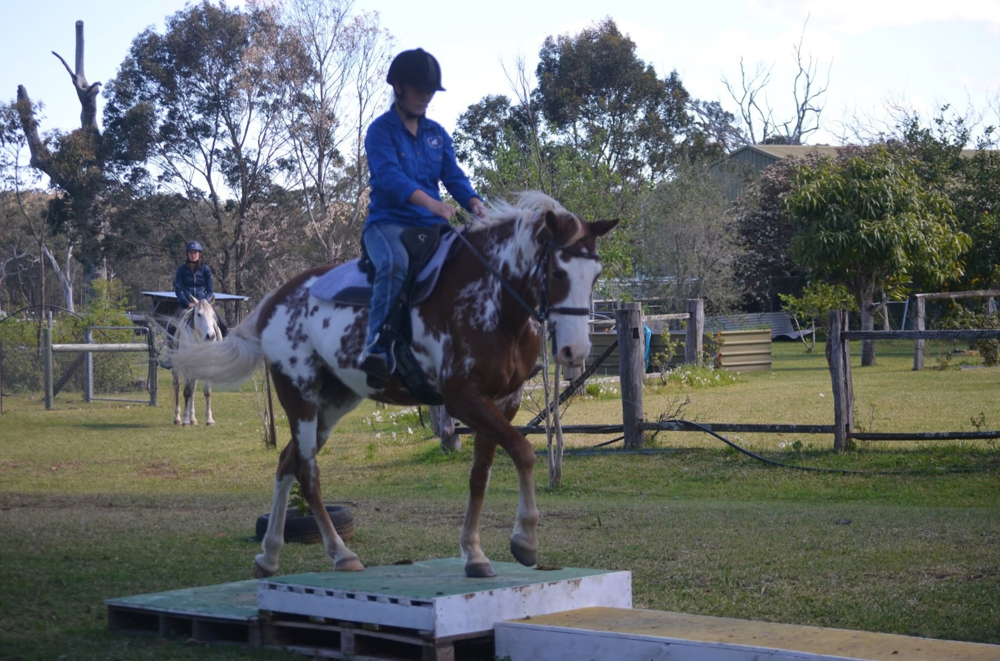
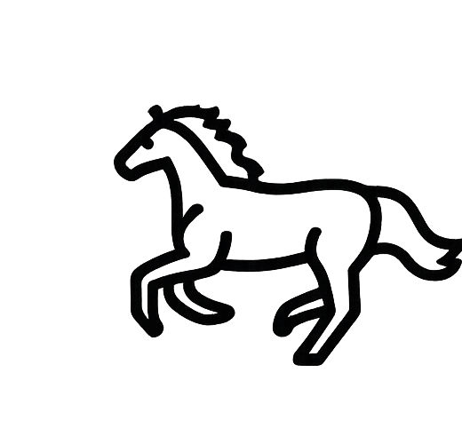
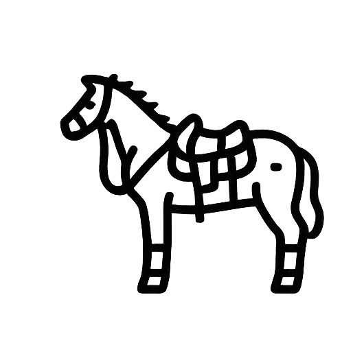
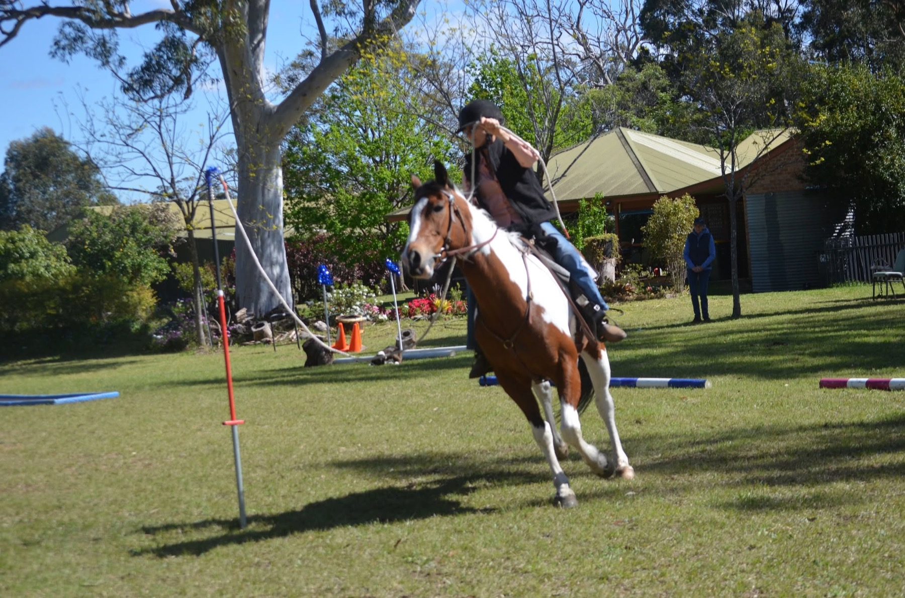
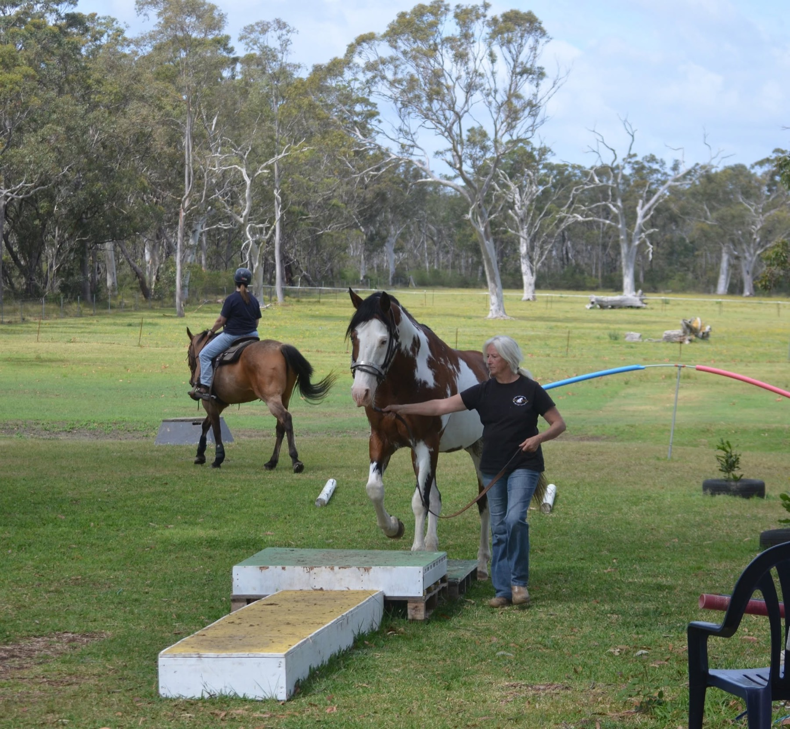
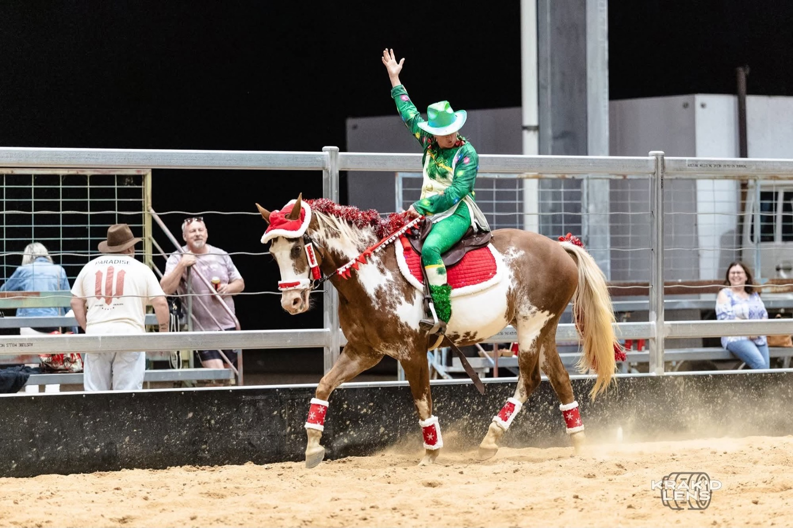

Training Days
Low-pressure sessions across bridges, gates, poles, tarps, water, and trail-style challenges.

Horse obstacle racing in the Shoalhaven
Training days, race practice, clinics, and friendly competition for riders who want confident horses and a capable community beside them.
Built for riders
SEORC brings together riders across the Shoalhaven for practical obstacle work, race-day preparation, and a supportive club environment. New members can build foundations, experienced combinations can sharpen timing and technique, and everyone gets room to learn at a sensible pace.

Low-pressure sessions across bridges, gates, poles, tarps, water, and trail-style challenges.

Timed obstacle patterns that reward calm riding, accuracy, partnership, and forward thinking.

Guest coaches, groundwork refreshers, course strategy, and confidence sessions for all levels.
Club days in action



Membership
SEORC is an affiliate of Australian Extreme Obstacle Racing. All participants need to complete a day membership form or become an annual member before taking part in club activities.
Registration keeps the club organised and helps us plan safe, well-run events. Riders can nominate experience level, volunteer preferences, and emergency contact details before arriving.
Start registrationNext up
Saturday, 11 July 2026 at Nowra Showground. Training rounds in the morning, timed patterns after lunch, and a relaxed club barbecue to finish.